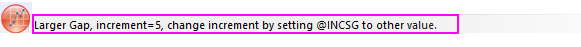
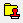
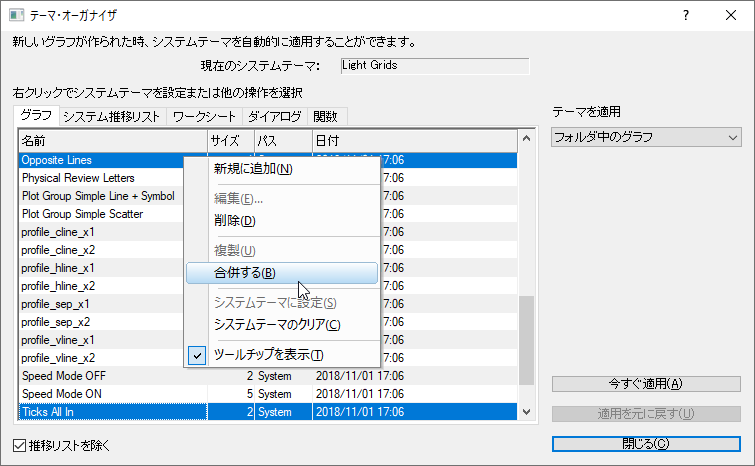

グラフの編集
Customizing-Graphs
はじめに
本章ではグラフ編集のさまざまな特徴を紹介します。全てのOriginのグラフはグラフテンプレートからできています。作成しているグラフが標準的な場合、きれいなグラフを作成するには、グラフテンプレートにあるオプションを適切に使います。基本的なグラフ作成の方法については、グラフ作成の章を参照してください。
グラフ作成にあたって、注釈をつけたり、軸スケールやプロットカラーを変更することができます。この章では、Originの主要なグラフ編集ツール、および、テクニックを紹介します。また、より複雑なグラフ編集タスクを扱えるようにするための準備を行います。
まずはグラフ編集で使用するツールバーから説明します。これらのツールバーには、グラフ要素をすばやく変更するための一般的なツールが含まれています。
ドッキング可能なツールバー
グラフ編集タスクに有効なツールバーボタン：
グラフ編集に使用されるメニュー、ダイアログ、ボタン
Originのグラフではミニツールバーを使用して、素早くグラフの編集を行えます。より複雑な編集オプションは、フォーマットまたはグラフ操作メニューのコマンドから使用することができます。次の表は、主なメニューコマンドとダイアログボックス、およびグラフのカスタマイズに使用されるいくつかのツールバーボタンの一覧です。
| タスク |
ダイアログ名 |
方法 |
| グラフページ、レイヤ、データプロットの編集 |
作図の詳細ダイアログPlot
Details Dialog BoxGraphs,
Plot Details |
- グラフページ、レイヤ、データプロット上でダブルクリック
- メニュー：フォーマット：作図の詳細（ページ属性）...
- メニュー：フォーマット：作図の詳細（レイヤ属性）...
- メニュー：フォーマット：作図の詳細（プロット属性）...
参考：ページ、レイヤ、プロットの編集 |
| 軸の編集 |
軸ダイアログ軸ダイアログボックス
グラフ、軸の編集 |
- 軸または軸目盛ラベル上でダブルクリック
- フォーマット：軸スケール...メニュー
- フォーマット: 軸目盛のラベル...メニュー
- フォーマット：軸のタイトル...メニュー
参考：グラフ軸の編集 |
デフォルト凡例の追加と更新（多くの2Dグラフ） |
N/A |
- グラフにオブジェクトを追加 ツールバーの凡例の再構成(CTRL+L)
 ボタンをクリック ボタンをクリック
- 凡例オブジェクトを右クリックして凡例：凡例の再構成と選択する
- メインメニューからグラフ操作：凡例：凡例の再構成を選択する
参考：グラフの凡例 |
| 凡例の編集凡例、編集
グラフ、凡例編集凡例の更新 |
(テキストオブジェクト-) Legendダイアログ |
- 凡例オブジェクトのテキストをCtrlキーを押しながらダブルクリック
参考：, （テキストオブジェクトプロパティ）テキストタブ
|
凡例の更新ダイアログ |
- 凡例を右クリックして凡例: 凡例を更新を選択するか、グラフ操作: 凡例: 凡例を更新を選択
参考： データプロットの凡例を更新ダイアログボックス
|
作図の詳細ダイアログ（ページ属性）内の凡例/タイトルタブ
|
- グラフウィンドウ枠内の白い部分（かつデータプロットの外側）でダブルクリックして凡例/タイトルタブを開く
- フォーマット：作図の詳細(ページ属性)を選択し、凡例/タイトルタブをクリックする
参考：, （作図の詳細）凡例/タイトルタブ
|
| 色スケールの追加（カラーマッププロットに対して） |
N/A |
- グラフにオブジェクトを追加 ツールバーの色スケールの追加
 ボタンをクリック ボタンをクリック
参考：色スケール
|
| バブルスケールの追加（シンボルサイズマップのプロットに対して） |
N/A |
- グラフにオブジェクトを追加 ツールバーのバブルスケール追加
 ボタンをクリック ボタンをクリック
参考：バブルスケール
|
| 複数のグラフウィンドウを1つのグラフウィンドウに統合Graphs,
Merge |
グラフウィンドウの統合ダイアログ |
- グラフ操作: グラフウィンドウの統合...メニュー
参考： グラフの統合と整列（チュートリアル）、グラフウィンドウの統合ダイアログボックス
|
複数レイヤグラフの編集：
サイズ変更、移動、交換、整列、レイヤ追加 |
レイヤ管理ダイアロググラフ、レイヤ管理
|
- グラフ操作：レイヤ管理メニュー
- レイヤアイコンを右クリックします。
参考： レイヤ管理のクイックスタート
|
複数レイヤグラフの簡単な調整:
レイヤの配置およびサイズ変更 |
レイヤ配置ダイアロググラフ、レイヤ編集
|
- グラフ操作：レイヤ配置...メニュー
- レイヤアイコンを右クリックします。
|
| グラフテンプレートとして設定を保存 |
テンプレートの保存ダイアログ |
- ファイル：テンプレートの新規保存...メニュー
- グラフウィンドウのタイトルバーで右クリックし、テンプレートの新規保存...を選択します。グラフ、カスタムテンプレートの保存
参考： グラフテンプレートの基本
|
グラフテンプレートの管理、
テンプレートを使用した作図 |
テンプレートライブラリグラフ、テンプレートライブラリ
|
- ワークシートがアクティブな状態で、メニューの作図 > テンプレート：テンプレートライブラリを選択する
参考： グラフテンプレートライブラリ
|
| グラフテーマとして設定を保存 |
フォーマットをテーマとして保存 ダイアロググラフ、フォーマットをテーマとして保存
|
- グラフ上で右クリックし、フォーマットをテーマとして保存...を選択
参考： フォーマットをテーマとして保存
|
| グラフテーマの管理：編集、統合、適用、システムテーマの設定グラフ、フォーマットをテーマとして保存
|
テーマ・オーガナイザダイアログTheme
Organizer |
- 環境設定：テーマオーガナイザ＞グラフタブ
- ホットキーF7
参考： テーマオーガナイザ
|
素早い編集: ミニツールバーとオブジェクトマネージャ
前のセクションでのダイアログボックスは作図の詳細へのフルアクセスを提供しますが、設定が埋もれていて見つけにくい場合があります。一般的なグラフ編集操作のための最も便利な方法として、ミニツールバーボタンまたはオブジェクトマネージャのショートカットメニューコマンドがあります。もちろんこれら2つを組み合わせて使用することもできます。
グラフ編集のミニツールバー
ほとんどのOriginのグラフで、一般的なグラフプロパティを対話的に変更するための「クイック編集」ツールがサポートされました。ツールは状況依存的であるため、（1）グラフウィンドウ内のどこをクリックするか、（2）選択したオブジェクトは何か、（3）個々のプロットまたはグループ化プロットを選択したかどうか-
選択内容を編集するためのさまざまなツールセットを使用できます。
- ミニツールバーの表示は、表示：ミニツールバーメニューで切り替えできます。
- ミニツールバーでは、5つのレベル（グラフプロパティの5つのグループ）を編集することが可能です。それらはページ、レイヤ、プロット、テキストまたは描画オブジェクトそしてグラフ軸です。
- グループ化プロットを編集する場合、1回クリックすると1つのプロットが選択されます。ミニツールバーには2つのタブが表示されます。1つはグループ化プロットを編集するため、もう1つは単一のプロットを編集する際に使用されます。
- ほとんどのミニツールバーには、関連するOriginダイアログボックスを開く「プロパティ」ボタンがあり、利用可能なコントロール範囲を見ることが可能です。
 |
選択を変更した場合を除き、ミニツールバーがフェードアウトした後、Shiftキーを押して1回限り復元できます。 |
|
選択可能ミニツールバーボタンを使用して個々のグラフレイヤ、プロット、グラフィックオブジェクトの選択を無効にした場合、オブジェクトマネージャー
(OM) で選択できます。
グラフウィンドウで選択可能に戻す操作
- オブジェクトマネージャで該当の項目をクリックして開くミニツールバーの選択可能ボタンをクリックします。（ヒント：オブジェクトマネージャにアクティブグラフウィンドウのプロットが表示されていない場合、右クリックしてプロットを表示を選択します。同様に、プロットのみが表示されている場合は、右クリックしてグラフオブジェクトを表示できます。）
|
増分を制御するボタン
一部のミニツールバーボタンで、ボタンをクリックするたびにいくつかの設定を変更することが可能です（フォントサイズ、回転角、レイヤグリッド間隔など）。このような場合、LabTalkシステム変数の値を操作することにより、これらの増分を制御することができます。

- 
LabTalkシステム変数の詳細については、Originヘルプのこちらを参照してください。
オブジェクトマネージャでグラフを編集
オブジェクトマネージャは、Originのウィンドウを管理するための一般的なツールですが、特に、グラフウィンドウを操作する場合に便利です。グラフウィンドウがアクティブな場合、オブジェクトマネージャには2つの表示があります。オブジェクトマネージャの何もない領域を右クリックして、プロットを表示またはグラフオブジェクトの表示(Ctrl+Shift+S)を選択して表示を切り替えられます。
- プロットを表示：レイヤ、プロットグループなどによる、折りたたみ可能な階層的なプロットのリストを表示します。
- グラフオブジェクトの表示：レイヤごとのウィンドウオブジェクト（凡例、テキストオブジェクト、画像など）の折りたたみ可能な階層的なリストを表示します。
オブジェクトマネージャのヒント
- プロットを表示またはグラフオブジェクトの表示のどちらの表示でも、要素を右クリックすると、疎の要素に対する操作のショートカットメニューが開きます（たとえば、プロットのグループ化解除や、あるプロットをグループの最初として指定する、など）。
- 両方の表示で共通するのは、各要素の横にあるチェックボックスです。チェックを付けると、その要素はグラフウィンドウに表示され、外すと非表示になります。
- 作図の詳細を開いてレイヤの名前を変更するほかに、オブジェクトマネージャでレイヤアイコン (例: Layer1
)を右クリックし、 名前の変更を選択します。
- さらに、ショートカットを使用してソースデータ、作図の詳細にすばやくアクセスでき、プロットやオブジェクトの順序を並べ替えたり、イメージウィンドウに挿入した画像を開いて編集するといったその他のタスクにもアクセスできます。
オブジェクトマネージャとミニツールバーを使ってグラフを編集
グラフがアクティブで、オブジェクトマネージャでグラフ要素を選択すると、ミニツールバーが表示されます（上の画像のように、右クリックメニューでミニツールバーが有効になっていることを確認してください）。
このボタンを使用すると、線の色、線の太さ、ラベルの表示など、一般的なプロットプロパティをすばやく編集できます。
|
オブジェクトマネージャのグラフオブジェクトの表示ビューで、ショートカットメニューには同じ名前の全てを選択を利用できます。フォントサイズなどのミニツールバーボタンと組み合わせて使用すると、グラフをすばやく変更できます。
|
サンプル:
1レイヤ2Y軸
単一レイヤの「二重Y軸」グラフがサポートされるようになりました。以前は、2Y軸グラフは2レイヤで作図していました。Origin 2023から、新しいGUI
コントロールにより、基本のグラフタイプにおいて単一レイヤで二重Y軸のグラフを作成できます。
次の簡単なサンプルでは、1つのX軸に対して4つのYデータセットをプロットしています（左図）。Yデータセットのうち2つは他の2つと比較して値の範囲が広いため、値の範囲がせまい2つのプロットはあまり変化が見られません。しかし、オブジェクトマネージャとミニツールバーを組み合わせて使用することで、値の範囲がせまい2つのプロットを選択し、右Y軸にプロットできます。これによりスケールが適切になり、データの傾向をより確認しやすくなります。
|
次の簡単なサンプルのほかに、F11キーを押して開くラーニングセンターで「2023」と検索すると、単一レイヤの二重Y軸バイオリンプロットのサンプルをまた、Originには対応するテンプレートについての詳細は、複数区分/軸セクションを参照してください。 |
ページ、レイヤ、プロットの編集
作図の詳細ダイアログボックスグラフ、作図の詳細グラフウィンドウは、階層構造で編成されるオブジェクトの集合です。下図から分かるように、ページ、レイヤ、データプロット、データポイントレベルには編集可能なプロパティがあります。
上述のとおり、ミニツールバーやドッキング可能なツールバーのボタンを使って、いくつかのグラフプロパティのクイックフォーマットを行うことができます。ただし、プロットのプロパティへのより包括的なアクセスは、各グラフの作図の詳細ダイアログボックスから利用できます。
作図の詳細を開くには：
- プロットをダブルクリックします。
- フォーマットメニューの作図の詳細(ページ属性)//(レイヤ属性)/(プロット属性)の何れかを選択します。
下図は作図の詳細ダイアログボックスのサンプルです。
- 左のパネルでは、ページ > レイヤ > プロットの階層を拡張/折りたたみ表示可能で、編集対象を選択できます。
- 右側のパネルはタブで構成され、左側のパネルで選択したオブジェクトに関連した編集項目がリストされています。
- オブジェクトを編集するには、左パネルで選択し、右パネルの様々なタブで、対応する項目を編集します。
| 左パネルで選択されたオブジェクト |
右パネルに表示される編集タブ |
| ページ |
ページ全体に関する設定 -- 印刷サイズ、作図順序、ページの表示色、凡例/タイトル等 |
| レイヤ |
グラフレイヤに固有の設定 -- レイヤ背景色、レイヤの大きさとスピードモードの設定、レイヤ表示方法、積み上げグラフの設定。グラフタイプによってこれ以外にも固有のタブが表示されます。
|
| プロット |
プロットに固有のプロパティタブとコントロールはプロットタイプによって異なります（例：散布図には散布図に関するコントロールを含む「シンボル」タブが、折れ線グラフには折れ線に関するコントロールを含む「グラフの線」タブがあります）。特定のデータプロットに関係すること（色、塗りつぶしパターン、カラーマッピング、ラベリング）は、このレベルのプロットの詳細にあります。
|
| データポイント |
ユーザー指定の「特別な点」に適用されるプロパティ離散点（散布図、線+シンボル、棒など）をプロットするすべてのプロットで使用できます。タブとコントロールは通常、プロットレベルで使用できるものと似ていますが、特別なポイントのレベルで設定したプロパティは、そのポイントにのみ適用されます。
|
:
|
レイヤサイズを変更する時に、テキストやオブジェクトの大きさが自動的にスケールされないように設定するには、作図の詳細（レイヤ属性）のサイズ
タブにある、固定倍率を1に設定します。 |
グループ化データプロットの編集
グラフ、グループ化データプロットの編集
 |
Origin 2020以降、グループ化プロットの選択動作に変更が加えられました。プロット上でシングルクリックをして、プロットを選択します。2回目のクリック（またはCTRLキーを押しながらクリック）をすると、単一ポイントを選択します。SHIFTキーを押しながらクリックをすると、全グループを選択します。新規のミニツールバーを操作している場合、プロットグループをシングルクリックすると選択したプロットのグループ化または単一に編集するツールを表示します。以前のバージョンの動作に戻すには、システム変数
@GSM=0に設定します。
|
複数のデータ範囲を選択して1つのグラフレイヤ内にプロットすると、プロットはレイヤ内でグループ化されます。一般に、グループ内のプロットは、プロットプロパティ（シンボル形状、シンボル色、線スタイルなど）ごとに1つ以上のカスタマイズ可能な推移リストから作成されたスタイルを割り当てることによって自動的に区別されます。
デフォルトでは、一部のプロパティでは「1」ずつ増加するように設定されますが、そうでないものもあります。たとえば、線の色は「Candy」のカラーリストに従って連続する各プロットにはリストの色が順次割り当てられますが、線のスタイルはすべてのプロットで実線です。これは最終的にユーザーが制御可能です。いずれの場合でも、各プロパティの推移リストはグラフテンプレート（.oggu）またはテーマファイル（.oth）で保存され、後で簡単に同じ外観のグラフを作成できます。
上の左側の図は、線+シンボルグラフにおける作図の詳細グループタブの表示内容です。グループタブの表の1列目には、線の色、シンボルタイプ、線スタイル、シンボルの縁色、シンボル内部の設定がリストされます。線の色、シンボルタイプ、シンボルの縁色のプロパティは1つずつ、サブグループ間（列のコメントでサブグループ化）推移が設定されています。また、線スタイル、シンボル内部はなし（変更なし）に推移が設定されています。
前述のように、この設定は全て編集可能で、グラフテンプレートを使用して編集内容を保存することができます。
オブジェクトマネージャを使用したプロットのグループ化
- （グループ化または非グループ化の）プロットに対して、レイヤ内で1つのプロットを強調表示するには、オブジェクトマネージャのプロットを1回クリックします。逆にオブジェクトマネージャでプロットをハイライトすると、グラフウィンドウでプロットが選択され、他のプロットは暗くなります。

- レイヤ内のプロットを並べ替えるには、（オブジェクトマネージャにある）グループ内のプロットアイコンをドラッグします。またはプロットを右クリックし、上へ移動または下へ移動を選択します。
- レイヤ内のプロットをグループ／非グループ化するには、グループアイコン("gN")
の上で右クリックして非グループ化します。レイヤ内のプロットをグループ化するには、プロット上で右クリックしてグループ開始に設定を選択します。
- プロットを他のグループへ移動させるには、プロットを他のグループへドラッグします。
- 一連のプロットをグループ外に移動するには、グループの最後のプロットを右クリックし、グループ最後として設定を選択します。
- イヤ（およびグラフ）からプロットを削除するには、プロットを右クリックして削除を選択します。
- プロットを2番目のY軸に移動する、またはプロットを別のレイヤに移動するには、オブジェクトマネージャのプロットを右クリックし、プロットを2番目のY軸に移動するか、またはプロットを他のレイヤに移動を選択します。
複数レイヤグラフの編集
グラフレイヤはOriginの基本概念であり、最も複雑なOriginグラフの基本構成要素です（例えば、左右両方のY軸を持つグラフは、あるレイヤを別のレイヤに重ね、2つのレイヤ間で共通のX軸を共有することによって構築されます）。グラフレイヤは基本的に自己完結型の単位ですが、レイヤ間に依存関係を作成することが望ましい場合があります。
- 依存性の1つのタイプは、レイヤの「リンク」と呼ばれるものです。これには、空間的関係または軸スケール値間の関係の確立が含まれます。グラフレイヤのリンクの詳細については、下記をご覧ください。
- もう1つの依存関係のタイプは「共通の表示」と呼ばれるものに基づいています。これは、グラフ内に複数の類似したパネルがあり、各グラフの背景色を変更したい場合、または変更する可能性がある場合に最も役立ちます。各レイヤで使用される色をプロットします。
作図の詳細のグラフページレベルでは、与えられたグラフページ内のすべてのレイヤに影響を与えるコントロールを持つレイヤタブがあります。共通の表示コントロールを使用して、マルチレイヤグラフのレイヤ、プロット、および軸のプロパティを同時に編集できます。たとえば、次の例では、2レイヤのトレリスプロットがあります。2つのレイヤは、2つのまったく異なるスケールを持つ左Y軸と右Y軸を用意するために必要です。両方のレイヤに同時に背景色を追加するために、共通の表示コントロールを使用しました。共通の表示コントロールを使わずに同じことを達成できますが、これには2倍の作業が必要です。つまり、レイヤ1の背景色を設定してから、レイヤ2の背景色を設定します。
これは簡単な例の説明でしたが、レイヤ、プロット、軸のプロパティをより複雑に組み合わせて適用するために、共通表示コントロールを使用できます。Originの組み込み（システム）複数レイヤグラフテンプレートの中には、共通の表示設定がデフォルトでオンになっているものがあります。複数パネルグラフで作業するときは、フォーマット：作図の詳細（ページ属性）を選択し、作図の詳細のレイヤタブをクリックし、共通の表示
設定を確認します。詳細は、共通の表示を参照してください。
|
共通の表示の適用先コントロールは、特定のレイヤを共通の表示編集に含めるか除くかを設定することができます。例えば、それぞれインセットグラフをもつ4パネルのグラフにこの「適用先」コントロールを使用すると、インセットレイヤに共通の背景色を適用することができます。4つの主レイヤ（パネル）には適用しません。詳細は、共通の表示を参照してください。
|
特別なポイント: 1つのデータポイントを編集する
グラフ、データポイントのカスタマイズ
散布図や棒グラフ、円グラフのようなデータプロットの種類では、ある1つのデータポイントだけの表示属性を変更することができます。
1つのポイントを編集する方法
- データポイントをCTRLキーを押しながらゆっくり2回クリックし、選択します。ミニツールバーを使用して、データポイントのプロパティを編集するか、スタイルまたは書式ツールバーの使用可能なボタンをクリックします。
- より多くの編集オプションを利用するには、（a）選択したポイントをダブルクリックするか、（b）選択していないデータポイントをCTRLキーを押しながらダブルクリックします。これにより、データポイントに対して編集操作を行う「作図の詳細」ダイアログボックスを開きます。（行番号によって「作図の詳細」の左パネルで識別されます。）
次に、右パネルのタブを使用して、データポイントの表示変更、ドロップラインやデータラベルなどの追加をします。特別なポイントに加えた変更は、同じプロット内の他のポイントの表示には影響しません。
Note:、カスタムコンストラクションにチェックがついている場合、ここでシンボルの編集を行います。カスタムコンストラクションは、特別なポイントとして指定されたものだけでなく、任意のプロットのシンボルに適用できます。
|
単一データポイントに行った編集を削除するには：
- 「作図の詳細」ダイアログの左パネルにある単一データポイントを右クリックして、プロット除去を選択します。
- グラフウィンドウで、単一のポイントをクリックして選択し、キーボードのDELETEを押します。
ポイント自体は削除されません。カスタムスタイルのみが削除され、ポイントはそれを含むデータプロットのスタイルに戻ります。
|
プロットの最初または最後に特別なポイントを追加するのは必ずし容易ではありませんが、簡単で確実な手法はあります。
- プロット上の任意の場所で特別なポイントを選択し、ダブルクリックして作図の詳細を開きます。
- 作図の詳細の左側のパネルで、ポイントインデックス番号を1回クリックし、インデックス番号が編集可能になるまで待ちます。
- プロットの最初のポイントに特別なポイントを追加するには、開始と入力します。 最後のポイントに追加するには、終了と入力します。最初または最後のポイントのインデックス番号がわかっている場合は、代わりにそれを入力できます。
- 編集ボックスの外側をクリックします。必要に応じて、その他の特別なポイントのカスタマイズを行うには、適用をクリックするか、OKをクリックして、作図の詳細を閉じます。プロットの最初または最後に特別なポイントが追加されます。
|
グラフ軸の編集
軸ダイアログボックス グラフ、軸の編集ミニツールバーボタンを使用することで、軸のプロパティに対する多くの一般的な編集を迅速に行うことができます。要素をクリックして編集をします。
より高度な軸のプロパティ編集を行うには、軸ダイアログでコントロールを行ってください。
- 軸ミニツールバーから プロパティダイアログを開くを選択します。
- Originメニューからフォーマット:軸スケールを選択します。
ミニツールバーを使用した軸の編集
軸のプロパティを迅速かつ簡単に調整するには、Originの軸ミニツールバーを使用します。すべてのミニツールバーと同様に、利用可能なツールはグラフの種類と選択したオブジェクトによって異なります。たとえば、グラフの軸線をクリックすると、軸の目盛ラベルをクリックした場合とは異なるボタンのセットが表示されます。
軸線ミニツールバーの「歯車」ボタンをクリックすると、軸線要素の「ミニダイアログ」が簡略化されたポップアップメニューが表示されることに注意してください。すべての軸設定にアクセスするには、いずれかのツールバーの軸ダイアログをクリックします。
軸ダイアログボックスを使用した軸の編集
全グラフの軸設定は、軸ダイアログボックスで行うことができます。ミニツールバーの「歯車」ボタンをクリックして軸ダイアログを選択します。
またはグラフの軸をダブルクリックするか、ラベルにチェックマークを付けます。軸ダイアログ-レイヤNが開きます。
下図は、2D及び3Dグラフのほとんどで使用されているタブ付きの軸ダイアログです。
- 左パネルで、編集する軸を指定するためにアイコンを選択（複数のアイコンを選択するときは、CTRLキーを押しながらクリック）して、右側でタブを開き、設定を変更します。
- 適用先ボタンをクリックすると、現在選択されている軸の書式設定を他の軸に適用することができます。
| タブ |
コントロール |
| スケール |
値のスケール範囲、スケールタイプ、再スケールモードとマージン、軸の逆順、主目盛と副目盛など。 |
| 目盛ラベル |
LabTalk置換または数式を使用したカスタムラベリングを含む主目盛と副目盛の表示、および書式設定オプションパーセンテージ、分数、円周率、および地理的（緯度/経度）フォーマットの表示を含む数値データのカスタムフォーマットの詳細については、Originのカスタムフォーマットを参照してください。
|
主目盛および副目盛のラベルのフォントサイズは個別に変更できます（軸ダイアログ >
目盛ラベルタブ > 副目盛ラベルサブタブ > フォントスケーラ(%)）。
 |
|
| タイトル |
軸タイトル（多くの場合、可変表記法を使用して設定されます）、およびフォントオプション。グラフ上のテキストボックスをダブルクリックして直接編集可能です。
|
| グリッド線 |
主目盛および副目盛のグリッド線の表示とプロパティを設定できます。 |
| 軸と軸目盛 |
全ての軸の軸と軸目盛の表示オプションをです。 |
| 特別な軸刻み |
特殊な目盛ラベルの配置 |
| 参照線 |
参照線は、強調表示や重要な統計量を示すためにグラフに追加可能な線です。さらに、それらを組み合わせて、グラフの一部に塗りつぶし領域を追加できます（たとえば、財務データのプロットの「リセッションバー」など）。
|
- グラフ上に参照線を配置するときに名前付き範囲
を使用できます。
- 参照線ダイアログまたはカスタマイズされたグラフで、参照線を右クリックしてデフォルトの線種として設定を選択することにより、参照線のデフォルト線種を設定できます。
|
|
| 軸破断 |
軸破断の表示と各破断の設定が可能です。 |
| Note: 軸編集と特殊グラフタイプ（極座標や三点グラフ、レーダーチャートなど）の軸設定についての詳細は、以下を参照してください。
ヘルプ：Origin：Origin ヘルプ > グラフ作成 > グラフの軸
|
データプロットの色を編集する
Originには、多数のカラーリストまたはパレットが用意されています。独自のカラーリストを作成したい場合、または標準のパレットセットをOriginに移行したい場合は、使用できるツールがあります。詳細については、次のセクションのカラーマネージャーを参照してください。
カラーマネージャー
カラーマネージャーは、Originで使う色のリストやパレットを、インポート、作成および整理するためのダイアログです。
カラーマネージャーを開くには：
- 環境設定: カラーマネージャーを選択します。
下記のリスト番号は、上の画像に表示されているコントロールと対応しています。
- これらのボタンをクリックして、インストールされているカラーリストまたはパレットを表示します。
- Webからインポートをクリックしてダイアログを開き、パレットをインストールするためのURLを指定できます。Scribus
(.xml)、Office Color Table (.soc)、Adobe Color (.aco)、Adobe Color Table
(.act)、Adobe Swatch Exchange (.ase)、JASC PaintShopPro (.pal)、がサポートされています。
- クリックすると、ローカルに保存されたパレットがインストールされます。Scribus (.xml)、Office Color Table
(.soc)、Adobe Color (.aco)、Adobe Color Table (.act)、Adobe Swatch Exchange
(.ase)、JASC PaintShopPro (.pal)、がサポートされています。
- クリックすると色の作成ダイアログが開き、さまざまなツールを使用して色を作成できます。標準の色コントロールを使用するか、HTMLコードを直接入力するか、スポイトツールを使用して画面上の色を選択します。詳細はOriginヘルプファイルの色の作成ダイアログから参照できます。
- 利用可能なリストを右クリックすると以下が可能です。
- リストを削除または名前の変更をします（名前を直接クリックして名前を変更することもできます）。淡色表示されているリストは、GUIに選択されています。GUIに選択されたものは、ユーザーインターフェース全体のドロップダウンリストから表示されます。作図の詳細、スタイルツールバーの塗りつぶしボタン
 、およびプロットまたは特別なポイントが選択されている場合は、ミニツールバーの塗り色ボタン
、およびプロットまたは特別なポイントが選択されている場合は、ミニツールバーの塗り色ボタン から表示されます。
から表示されます。
- カラーマネージャーで選択した2つ以上のカラーリスト/パレットの色を統合できます。選択したリスト/パレットの合計色数が256色より多くなるときは色を統合できません。
- リストコントロールを使用して、カテゴリを未定義、連続、分岐、または固定と設定します。
- これらのコントロールを使用して、ユーザーインターフェイス（GUI）からカラーリストとパレットを追加または削除します。
- これらのコントロールを使用して、選択したリストまたはパレットをさまざまなGUIカラーリストで上下に移動します。
- デフォルトのプロットの色を設定をクリックして、テーマオーガナイザのシステム推移リストタブを開きます。ここで、プロットで使用するデフォルトの色を設定できます。
- リスト番号アイコンをドラッグして、GUIカラーリストの順序を並べ替えます。
グラフに色を適用する
グラフに色を適用するための多くのオプションがあります。ここでは、基本について説明します。詳細については、他の案内を参照してください。
プロットの色のテーマに関する主要トピックのリスト
色を個別に適用する
|

カラーチューザーの単一色タブに「スポイト」ツールを追加することで、カスタムカラーの選択と適用が簡単にできます。前のバージョンでは、色の作成ダイアログでスポイトツールを使用できます。
|
色を個別で適用する、とは、色リストから一連のプロットに色を適用するのではなく、1つのプロットに1つの色を適用することを意味します。これは、単一のプロットまたは特別なポイントに色を適用する最も基本的な方法です。単一色タブの内で、LabTalkカラー、選択したカラーリスト、カスタム、最近使った色などから選択できます。
- 散布点などのプロットを選択し、表示されるミニツールバーの塗り色ボタンをクリックします。
- プロットを選択し、スタイルツールバーの塗り色ボタンをクリックします。
- プロットをダブルクリックして作図の詳細ダイアログボックスを開き、右側のタブ（たとえば、散布図のシンボルタブ）をクリックして、要素の色を設定できます。
- 特別なポイントを作成する、つまり、プロットの1つのデータポイントのみを編集するために、Ctrlキーを押しながらクリックしてポイントを選択し、ミニツールバー、スタイルツールバー、または作図の詳細ダイアログを使用して、そのポイントの色をカスタマイズします。
ポイント毎に色を適用する
「ポイント毎に色を適用する」とは、ある方式によってプロットの各点に色を適用することを意味します。最も簡単なのは、事前定義されたカラーリストから推移開始を選択し、プロットの各ポイントに対して順番に色を割り当てることです。
単色を適用する場合と同様に、作図の詳細を使用してこれらの設定を適用できます。または、プロットを選択し、ワークスペースの上部にドッキングされたフローティングミニツールバーまたはスタイルツールバーの塗り色ボタンを使用します。
他の方式は通常、列の値を使用してポイントに色を割り当てます：
- インデックスは、整数またはテキスト文字列（カテゴリ値）をリスト内の色に関連付けることにより、ポイントの色を割り当てます。
- RGB直接は、RGB値の列を使用して色を割り当てます。
- カラーマップ（2D、等高線、および3Dプロットに使用）リストまたはパレットの色を、プロットのYまたはZ値の範囲全体に割り当てます。
他にも、特定のプロットタイプ固有の方式ありますが、ほとんどは上記のリストの通りです。詳細は、 データセットの値を利用して、データプロットの色を制御する
を参照してください。
プロット毎に違う色を適用する
一連のプロットにそれぞれ色を割り当てたいとき、プロット毎に色を適用します。通常、この一連のプロットは「プロットグループ」で構成されます。プロットグループでは、色、線のスタイル、シンボル形状などのスタイルリストを推移させて、色を含むプロパティを各プロットに割り当てます。
|
Origin 2023以降、3D棒グラフにカラーパレットを適用する新しい方法を利用できます。Z値でカラーパレットを適用できるので、とくに3D棒グラフで便利な設定です（上記で説明している「ポイント毎に色を適用する」や下記の「カラーマップを適用」でなく、3D縦棒/横棒グラフ固有の設定です）。
このグラフ編集についての詳細は、F11キーを押して開くラーニングセンターのグラフサンプルタブで、ドロップダウンリストから「3D棒グラフ」を選択して「gradient」と検索してサンプルを確認してください。
|
2D, 3Dグラフ および 等高線図にカラーマップを適用する
等高線図または3Dプロットではカラーリストも使用できますが、カラーパレットを使用するのがより一般的です。これにより、より広い範囲のカラーバリエーションが可能になり、3D曲面図および3D関数プロットにリアリズムが加わります。

|
ドラッグアンドドロップでOriginに新しいカラーパレットを追加することができます。Scribus (.xml)、Office
Color Table (.soc)、Adobe Color (.aco)、Adobe Color
Table (.act)、Adobe Swatch Exchange (.ase)、JASC PaintShopPro
(.pal)、がサポートされています。 |
カラーマップは、2Dグラフにも適用できます。これにより、推移またはインデックスで可能な範囲よりも広い範囲のカラーバリエーションをデータポイントに適用できます。数千の散布点がプロットされ、アルゴリズムを使用して点密度を計算し、色を点密度の範囲に割り当てる、Originの
密度ドットグラフでは、散布図にカラーマップを適用しています。
カラーマップを3Dグラフまたは等高線図に適用するのは、ポイントごとまたはプロットごとに色を適用するのとほとんど変わりません。プロットを選択し、ミニツールバーまたはスタイルツールバーのパレットボタンをクリックします。パレットを選択します。

作図の詳細のカラーマップ / 等高線タブを使用することもできます。このタブでは、カラーマップを選択して適用するだけでなく、さらに多くのオプションを利用できます。
等高線や3D曲面図など、カラーマッププロットに色を適用する方法の詳細は、以下のトピックを参照してください。
グラフの凡例
デフォルト凡例の作成方法
グラフ、軸の編集 凡例、編集 グラフ、凡例の編集グラフの凡例は、データをプロットすると、自動的に作成されます。2D及びいくつかの3Dグラフテンプレートでは、Originは(A)グラフテンプレートに保存されているプロット形状の情報、(B)ワークシート列ラベル行に保存されているデータセット情報を組み合わせたデフォルト凡例を作成し、グラフページ上に配置します。
デフォルトの凡例オブジェクトは、文字テキストとプロットシンボルでは作成されず、LabTalkスクリプトから作成されます。
- これにより、凡例オブジェクトをプロットデータおよびワークシートメタデータに動的にリンクさせることができるため、データまたはプロットメタデータが変更されたときに凡例を更新できます。
- 凡例オブジェクトの作成は文字情報ではなくスクリプトに依存しているため、必要に応じて、新しいデータを使用して、カスタマイズ内容をグラフテンプレートに保存し、それに付随する凡例オブジェクトを使用してグラフを再作成できます。
凡例スクリプトは、変数値を読み取り可能な記号とテキストに変換するために「置換表記」に依存しています。置換表記は、凡例オブジェクトの内部をダブルクリックすると表示されます（編集の場合と同様です）。
- 作図の詳細ダイアログボックス（フォーマット：作図の詳細（ページ属性）...の凡例／タイトルタブにある%(1), %(2)の解釈モードのリストを設定することで、デフォルトの凡例テキストの作成にどのデータセットメタデータを使用するかを制御します。
- カスタム文字列はLabTalk
置換を使って構築できます。このカスタマイズはグラフテンプレートに保存して繰り返し使用することができます。
デフォルト凡例の追加と更新
下表はデフォルトの凡例の追加、更新、再構築に関連するタスクと、制御のために使用するコントロールのリストです。凡例、更新 vs. 再構成先に進む前に、2つの凡例リフレッシュモードがあることを指摘しておきます。
- 更新：凡例は、サイズと位置の調整、凡例の記号とテキストのカスタマイズなど、既存の凡例に対して行ったカスタマイズを保持します。
- 再構成： 凡例は全てのカスタマイズを上書きします。凡例を追加または再構築すると、グラフテンプレートに格納されている凡例のコピーが作成されます。
|
凡例オブジェクトが行方不明になることがあります。凡例が追加または再構築できない場合は、凡例が既に存在するものの、ページの外にあって表示されていない可能性があります。グラフ操作:
凡例: 凡例位置のリセットをクリックすると、凡例がデフォルトの位置に復元されます。 |
グラフからデータを追加または削除する際に、凡例をどのようにリフレッシュするのかを決定する設定は、グラフテンプレートの凡例更新モードに保存されます。下記の凡例の更新の制御をご覧ください。
| タスク |
方法（グラフがアクティブなとき） |
| 凡例の追加または再構成 |
- メニューでグラフ操作: 凡例: 再構成と操作
- 凡例の再構築ボタン
 (グラフにオブジェクトを追加 ツールバー)。
(グラフにオブジェクトを追加 ツールバー)。
- Ctrl + L
|
テンプレートと一緒に保存されていない凡例のカスタマイズは、再構成すると失われます。 |
|
| 凡例の更新する |
legendupdateダイアログボックスを開きます。
- メニューでグラフ操作：凡例：凡例の更新と操作
- 凡例上で右クリックして凡例：凡例の更新を選択
Note: 凡例を「更新」しても凡例のカスタマイズは上書きされません。
|
| 高度な凡例編集凡例、カテゴリカルデータ凡例、ボックスチャート |
これらの特別な凡例を右クリックすると、各凡例タイプに固有のカスタマイズオプションを含むダイアログボックスが開きます。
|
| 色スケールを追加Legend,
Color Scales |
カラーマップグラフでのみ利用できます(等高線図など)。
- 色スケールの追加
ボタン(グラフにオブジェクトを追加 ツールバー)
- レイヤ上で右クリックして新規の色スケールを選択します。
- 挿入：色スケールメニュー
- 1つのグラフウィンドウに複数のカラーマッププロットがある場合は、各プロットをクリックして選択してから、対応するカラースケールを追加できます。
|
| 色スケールの設定 |
グラフ内に色スケールオブジェクトがある場合に利用できます。色スケール制御ダイアログボックスを開くには、
- 色スケールオブジェクト上でダブルクリック
- 色スケールオブジェクト上で右クリックして、プロパティを選びます。
|
| バブルスケールを追加Legend,
Bubble Scales |
バブルプロットあるいは、データセットによりシンボルサイズを制御しているときに利用可能です。
- 挿入：バブルスケールを選択します。
- レイヤ上で右クリックして新規のバブルスケールを選択します。
- バブルスケール追加
ボタン(グラフにオブジェクトを追加 ツールバー)
- 凡例を右クリックし、コンテキストメニューからバブルスケールの追加を選択します。
|
| バブルスケールの設定 |
グラフ内にバブルスケールオブジェクトがある場合に利用できます。バブルスケールの制御ダイアログボックスを開くには：
- バブルスケールオブジェクト上でダブルクリック
- バブルスケールオブジェクト上で右クリックして、プロパティを選びます。
|
|
凡例を更新ダイアログボックスおよび作図の詳細のページレベルの凡例／タイトルタブには、凡例の自動更新モードドロップダウンがあります。ここで凡例テキストを作成する際にどのワークシートメタデータ（例：列のロングネーム、コメント等）を使用するかを決定します。カスタムオプションのリストについては、凡例の置換表記を参照してください。
|
| Note:グラフ凡例の作成や編集についての詳細は、次のヘルプをご覧ください。
ヘルプ：Origin：Originヘルプ ＞ グラフ作成 ＞凡例と色スケール
|
凡例の更新の制御
データプロットがグラフレイヤに追加されたり削除されると、デフォルトの動作で凡例が更新されます。この設定は、作図の詳細（ページ属性）ダイアログの凡例/タイトルタブの凡例更新モードのドロップダウンリストで設定できます。
デフォルトでは、追加時に更新に設定され、プロットが追加（または削除）された際に凡例を更新します。手動入力などにより凡例を編集した場合は更新されず、既存のプロットへの凡例のカスタマイズが維持されます。

|
チュートリアル: 凡例の編集とデータプロット追加
- Originで新規プロジェクトを開始します。
- Windowsエクスプローラを開き、<Originインストールフォルダ>\Samples\Import
and Export\フォルダを開きます。
- 3つのファイル S15-125-03.dat、S21-235-07.dat、S32-014-04.dat
を選択し、Originのワークスペースにドラッグアンドドロップします。3つのファイルがそれぞれ別のワークブックにインポートされます。
- ワークブックのいずれか一つをクリックして列Bを選択して折れ線グラフを作成します。
- 凡例の上で右クリックし、凡例：凡例を更新を選択し、データプロットの凡例を更新ダイアログを開きます。
- 凡例の自動更新モードをカスタムに変更すると、編集ボックスが表示されるので、以下のテキストを入力します：
@WS, @LD3
OKボタンをクリックしてダイアログを閉じます。凡例が更新され、シート名と3番目のユーザーパラメータが表示されます。
- 2つ目のワークブックをクリックして選択し、B列を選択してから、マウスのカーソルを選択範囲の右端に移動すると表示が変化するので、
 マウスでつかみ、グラフウィンドウにドラッグします。すると、グラフウィンドウにデータが追加されます。 マウスでつかみ、グラフウィンドウにドラッグします。すると、グラフウィンドウにデータが追加されます。
- 3番目のワークブックのB列で同じ操作を行います。グラフに3つのデータプロットが表示され、凡例が自動で更新されて3つのプロットすべての識別子が表示されます。
- それぞれの曲線をクリックして選択し、スタイルツールバーを使用して線の色を設定します。凡例が自動的に更新され、新しい線の色が表示されます。

|
特別な凡例の形式
前述のように、Originはこれらの特殊な凡例を特定のグラフタイプで使用するためにサポートしています。これらの凡例は、ほとんどの2Dグラフタイプで使用されているデータプロットの凡例と同様にカスタマイズおよび更新できます。
| 凡例の形式 |
メニュー操作 |
使用時の条件 |
| カテゴリー値の凡例 |
グラフ操作：凡例：カテゴリー値 |
最低でも一つのプロット属性（色やシンボルの形状など）がデータインデックスにより制御されている。
カテゴリー値の凡例ヘルプページを参照してください。
|
| 1ポイントずつの凡例 |
グラフ操作：凡例：1ポイントずつ |
データインデックスや増分リスト、カラーマップによりシンボルの形が制御されている。
1ポイントずつの凡例のヘルプページを参照してください。
|
| ボックスチャート要素の凡例 |
グラフ操作：凡例：ボックスチャート要素 |
グラフがボックスチャートまたは、グループ化ボックスチャートである。
ボックスチャート要素の凡例ヘルプページを参照してください。
|
凡例を素早く編集するためのヒント
グラフの凡例に対する編集の多くは、凡例のミニツールバーから行うことができます。2Dグラフのデフォルトの凡例には2つのミニツールバーがあります。
- 凡例ツールバー
-- 凡例オブジェクトを選択すると表示されます。フォント、凡例の再構成、逆順などの設定が可能です。また、凡例オブジェクトをクリックすると、青い選択ハンドルも表示されます。
- 凡例に表示する列ラベル行を設定可能なデータプロットの凡例の更新モードといったの詳細設定にすばやくアクセスすることもできます。
- 凡例シンボルツールバーは、凡例内のシンボル部分をクリックすると表示されます。シンボル変更やパターンブロックの高さや幅、線の太さなどを変更できます。

デフォルト凡例のミニツールバーに加え、色スケールとバブルスケールには専用のツールバーがあります。
ミニツールバーを使用して凡例または色スケールを編集するには：
- 凡例または凡例の要素（凡例シンボルなど）を選択します。コンテキスト固有のボタンを備えたミニツールバーが表示されます。
- ツールバーが消えそうになった場合、Shiftキーを押して元に戻すことができます。
|
同じページ上の複数の凡例オブジェクトをミニツールバーを使って編集するには、まずCtrlキーを押しながら複数のオブジェクトを選択します。Ctrlキーから指を離すとミニツールバーが表示されます。また、グラフウィンドウがアクティブな時、オブジェクトマネージャの凡例オブジェクト上で右クリックして、同じ名前の全ての選択を選ぶことでもミニツールバーを表示できます。
|
.
凡例編集のヒント
- ミニツールバーボタンとは別に、凡例オブジェクトを右クリックして凡例を選択し、プロットに従ったテキスト色、逆順、非表示プロットの凡例を隠すなどの便利なコマンドを使用してショートカットメニューを開くこともできます。同じメニューコマンドはグラフ操作：凡例から利用できます。
- ミニツールバーとショートカットメニューの両方に、凡例のアスペクトを変更するための水平/垂直にそろえるボタン/コマンドがあります。
または、凡例オブジェクトを選択し、Ctrlキーを押しながら選択ハンドルをドラッグしてインタラクティブに変更することもできます（たとえば、水平方向にドラッグして、すべてが1行になる凡例を作成できます）。
- デフォルトの2Dグラフの凡例の凡例項目の周囲の余白の大きさを変更する場合には、凡例の枠上をクリックして表示される選択ハンドルをドラッグします。

- 列ラベル行に格納されたプロットメタデータは凡例テキストの理想的なソースですが、既存の凡例テキストを文字テキストで単純に上書きすることもできます。凡例テキストをダブルクリックして内部編集モードを立ち上げるか、凡例を右クリックしてプロパティを選択します（プロットシンボルを作成する「\l(
)」表記を上書きしないように注意してください）。 ）。凡例テキスト上でCtrl+ダブルクリックしてテキストオブジェクトダイアログボックスを開きます。
- 前述のように、デフォルトの凡例は、ワークシートのメタデータと編集可能なプロットスタイルを組み合わせて自動的に生成されます。ただし、自動生成された凡例に微調整が必要な場合があります。
- 一般的な凡例の調整の1つの方法として、データ プロットから独立した凡例の記号とテキストを手動で追加するものがあります
(詳細はこちらを参照してください)。頻繁に使用されるシンボルに加え、独立したカラーブロック(下図1)を追加できます。
- 凡例オブジェクトを右クリックして、プロパティを選択し、ダイアログを開きます。
- 凡例シンボル追加ボタン
 をクリックします。
をクリックします。
- カラーブロックにチェックを付けて編集し、追加をクリックします。
- ブロックの追加操作で表示された文字列の後ろに手動でテキストを追加してからプロパティダイアログを閉じます。
- もう一つの凡例調整方法として、凡例エントリ間の余白追加があります。これは、テキストオブジェクト- Legendダイアログのツールバーにあるセパレータ
 ボタンで可能です（下図2）。
ボタンで可能です（下図2）。
- テキストオブジェクト- Legendダイアログの上部パネルで、セパレータを配置する行の前の行の末尾にカーソルを置き、セパレータボタンをクリックします（ヒント：セパレータの高さは挿入された\sep:50の数値部分を変更することで制御できます）。
- 凡例に手動で特殊文字を追加する場合、簡易的なシンボルマップダイアログを利用できます。タブ上によく使うシンボルが配置されています。フルバージョンのシンボルマップダイアログを表示するには、詳細ボタンをクリックします。
- 凡例シンボルをダブルクリックして、作図の詳細ダイアログボックスを開きます。
- 凡例に加えた変更は、グラフテンプレートを使用して保存できます（ファイル:テンプレートの新規保存）が、グラフを作成するたびに凡例オブジェクトをグラフに追加したくない場合は、凡例オブジェクトを削除して、
グラフテンプレートを再保存します。
グラフに注釈を付ける
グラフ、テキストと描画オブジェクトの追加
グラフに「注釈をつける」と言えば、グラフにテキストを追加したりオブジェクトを描画したりすることです。一般に、これらの「注釈」は何らかの方法でグラフを強化するのに役立ちます。ページタイトルの追加、あるグラフ内容に注意を引く矢印の追加、データポイントのラベル付け、グラフ作成の時刻を記録する日時スタンプの追加等です。
テキストオブジェクトに追加と同様に、 ミニツールバーボタンを使って、簡単にグラフに注釈を付けることができます。あるいは、ユーザー指定のイベントが発生したときに必ず実行される変数値またはLabTalkスクリプトにリンクされる、より複雑なオブジェクトを追加することもできます。
次の表は、いくつかの一般的なグラフ注釈付けタスクと、それらのタスクを実行するために使用可能なツールの一覧です。
| タスク |
方法 |
| データポイントとプロットのラベル付け |
- フォーマット: 作図の詳細（プロット属性）を選択し、ラベルタブをクリックしてから有効にするを選択します
(すべてのグラフについて有効という訳ではありません）。
- プロットを選択し、ミニツールバーのデータラベルを表示 ボタンからラベルをオンにします。一部のラベルボタンは、データラベルのフォーマットオプションをサポートしている場合があります（ヒントは、ここに示すボタンのように下向きの矢印になります）。
- 単一のデータポイントにラベルを付けるには、ポイントを2回クリックします（ヒント：ダブルクリックではなく、クリック、一時停止、クリック）。単一ポイントを選択したら、ミニツールバーのデータラベルを表示ボタンをクリックします。
- ミニツールバーでサポートされていないフォーマットオプションの場合、通常、作図の詳細のラベルタブにあるコントロールを使用します。ラベルオプションはプロットタイプによって異なることに注意してください。
|
| テキストオブジェクトの追加 |
- テキストツール
 ボタンをクリックし、グラフ上でクリックして配置します。 ボタンをクリックし、グラフ上でクリックして配置します。
- グラフ上を右クリックし、ショートカットメニューからテキストの追加を選択します。
- テキストをダブルクリックして、リッチテキストを編集します。 または、オブジェクトをクリックし、テキストオブジェクトのミニツールバーを使用して、フォントの色、太字、整列、テキストの折り返しなどを変更します。
|
| ページタイトルの追加 |
- グラフウィンドウにページタイトルを追加するには、ページ上部（タイトルバーのすぐ下）にマウスカーソルを移動してクリックして表示されるミニツールバーのページタイトルを追加ボタンをクリックします。
 |
| レイヤタイトルの追加 |
- アクティブレイヤのレイヤタイトルを追加/編集するには、グラフレイヤをクリックして表示されるミニツールバーのレイヤタイトルの追加をクリックします。または、グラフ上で右クリックしてショートカットメニューからレイヤタイトルを追加/変更を選択します。
- これは、(a) レイヤ上で水平方向に中央揃えされ、(b) テキスト折り返しが有効になっている、新しいタイプのテキストオブジェクトです。タイトルを追加した後は、ミニ
ツールバーボタンでオン/オフを切り替えることができます。
|
| 垂直/水平の線を追加 |
- 2Dグラフをアクティブにし、挿入：直線を追加メニューを選択します。このツールでは、線オブジェクトを配置するために、At
ValueのLabTalk式をサポートします。（例：「mean(plotdata(1,Y))」は「最初のプロットのYデータセットの平均」に変換。」）詳細は軸の値を参照ください。
|
| データポイントの注釈グラフ、データポイントのラベル
|
- これは、個々のデータポイントにラベルを付けるためのオプションです。ツールバーの データラベル
 ツールをクリックします。詳細はデータラベルツールを参照してください。 ツールをクリックします。詳細はデータラベルツールを参照してください。
|
| 図形オブジェクトを作成 |
プロット操作・オブジェクト作成ツールバーの対応するボタンを使用します。Originでは以下をサポートします。
- 矢印、曲線矢印
- 直線、折れ線、曲線、自由曲線
- 矩形、円形、多角形、領域
|
| 数式オブジェクト、Wordオブジェクト、Excelオブジェクトやその他のOLEオブジェクトの挿入ExcelGraphs,
Insert Equation |
- ツールバーのツールで、数式オブジェクトの挿入グループを使用「OriginLab ファイル交換の場」から無料のアプリをダウンロードして、LaTeXオブジェクトをワークシートとグラフに挿入することができます。
|
| ワークシートの挿入、グラフの挿入 |
- プロット操作・オブジェクト作成ツールバーのワークシートの挿入
 または グラフの挿入 または グラフの挿入  ボタンをクリックします（1つのボタンからアクセスできます）。これによりブラウザダイアログが開き、ワークシートまたはグラフを選択できます。どちらも、グラフにイメージオブジェクト
(名前 = WBook または GPage) を挿入します。 ボタンをクリックします（1つのボタンからアクセスできます）。これによりブラウザダイアログが開き、ワークシートまたはグラフを選択できます。どちらも、グラフにイメージオブジェクト
(名前 = WBook または GPage) を挿入します。
- 挿入されたテーブル（ワークシート）のグリッド、フレーム、セルの色、フォントなどの設定を変更することができます。詳細については、グラフ
(およびレイアウト) へのワークシートの挿入を参照してください。
|
| イメージファイルの挿入 |
- グラフ上で右クリックしてイメージをファイルから挿入を選択します。アクティブなグラフレイヤの背景として画像を挿入するかどうかを尋ねられます。「はい」を選択すると、画像がインポートされ、プロット、グラフの凡例、テキストオブジェクトなどの後ろに配置されます。
|
| 表の追加 |
- グラフにオブジェクトを追加ツールバーの新規リンクテーブルボタン
 をクリックします。 をクリックします。
- メインメニューから、挿入：表を選択します。
- 表を編集するには、表オブジェクト上でダブルクリックします。
- 表をフォーマットするには、表を選択して、使用可能なミニツールバーを使用します。
|
| 日時スタンプ |
- グラフにオブジェクトを追加ツールバーの日時スタンプボタン

|
| プロジェクトパスの挿入 |
- グラフにオブジェクトを追加ツールバーのプロジェクトパスボタン
|
| アスタリスクブラケットの追加 |
- 統計的有意差等を示すために、グラフにオブジェクトを追加ツールバーのアスタリスクブラケットの追加ボタン
をクリックします。
- 括弧の形を変更するには、ブラケットをクリックし、括弧の種類ミニツールバーボタンのドロップダウンリストから選択します
。
- ブラケットのサイズと位置は手動でハンドルをドラッグして調節します。
- ブラケットをフォーマットするには、ブラケットをクリックして、ミニツールバーボタンをクリックします。
|
| XYスケールを追加 |
非線形のXYスケール使用時に便利な機能です。
- XYスケールの付加ボタン
 をクリックしてからグラフレイヤをクリックします。 をクリックしてからグラフレイヤをクリックします。
- メニューから挿入：XYスケールを選択します。
|
注釈編集のヒント
|
Origin 2021以降、複数行のテキストオブジェクトを作成するときにAlt + Enterを使用します。Ctrl
+ Enterを使用して改行を挿入するように戻すには、@FCA=1.を設定します。
|
- 四角形ツール
 や円ツール
や円ツール は、CTRLキーを押しながらドラッグすると、正方形と円（楕円ではなく）を作図可能です。
は、CTRLキーを押しながらドラッグすると、正方形と円（楕円ではなく）を作図可能です。
- 選択したオブジェクトの素早い編集にはミニツールバーを使用します。詳細な編集は、オブジェクトを右クリックしてプロパティを選択して、オブジェクトプロパティを編集し、デフォルトとして設定することもできます。
- 軸タイトルやグラフの凡例を含むテキストオブジェクトの場合、『内部編集モード』でテキストの編集が可能です。テキストオブジェクトをダブルクリックすることで編集できます。書式ツールバーボタンで、
上付き文字、下付き文字、ギリシャ文字を追加します。
- 凡例オブジェクトを含むテキストオブジェクトでテキストの折り返しを有効にできます。オブジェクトのプロパティダイアログを開き、枠タブでテキストの折り返し、高さ調節にチェックを付けるか、オブジェクトをクリックしてミニツールバーのテキストの折り返しボタンをクリックします。
- NEW: デフォルトで、折り返しテキストのインプレース編集には80文字（スペースを含む）までに制限されます。このしきい値を下回っている場合、オブジェクトをダブルクリックすると、インプレース編集モードになります。しきい値を超える場合、ダブルクリックすると
プロパティダイアログが開きます。システム変数@TLIPを使用して、このしきい値を調整できます。
- NEW: 折り返ししていない長いテキストでは、システム変数@TLIPN
(デフォルト = 60) を使って、ダブルクリック時にインプレース編集モードを利用するかプロパティダイアログを使用するかのしきい値を設定できます。
- 軸のタイトルと凡例を手動で編集するのが最善の「迅速な解決策」であることに注意してください。ほとんどの場合、ワークシートの列のメタデータを使用して軸のタイトルと凡例のテキストを自動作成することをお勧めします。
- 複数のフォントサイズを混ぜて使用しない限り、内部編集モードでフォントサイズの設定をしないでください。テキストオブジェクトを1回クリックして緑の選択ハンドルを表示し、書式ツールバーからフォントサイズを選ぶのが正しい方法です。内部編集モードで設定した場合、テキストオブジェクトにカーソルを合わせたときにOriginは適切なフォントサイズを表示しません。
- 『内部編集モード』を使用している際には、右クリックしてシンボルマップを選択すると、テキストオブジェクト内に特殊文字を挿入できます。
- セルの内容をコピー/貼り付けすることでワークシートセルの内容をテキストオブジェクトに挿入できます。テキストオブジェクトで内部編集モードにし、右クリックして貼り付けまたはリンクの貼り付けを選択します。貼り付けによって追加されたデータは静的ですが
リンクの貼り付けは動的であるため、リンクされたセルのデータが変更されると、テキストオブジェクトが更新されます。
- また、『内部編集モード』の時に右クリックして、情報を選択できます。変数...を選択すると、プロジェクト変数をテキストオブジェクトに挿入します。貼り付けられた情報はLabTalk変数値へのリンクなので、変数値が変更した場合挿入データが更新されます。
- LabTalkの%と$置換表記を使って変数をテキストオブジェクトに挿入できます。テキスト上で右クリックしてプロパティからテキストオブジェクトのダイアログボックスを開き、プログラミングタブで、(%,$)にリンク、置換レベルを1に設定します。テキストオブジェクトを右クリックして、ショートカットメニューからプロパティを選択します。または、プロパティダイアログを開かずに置換へのリンクミニツールバーボタンを使うこともできます。
- プロパティのプログラミングタブで、LabTalkスクリプトとテキストや図形オブジェクトを接続します。（詳細は、テキストラベルをデータと変数にリンクをご覧ください。）スクリプトの実行には、テキストボックスにスクリプトを入力して、のあとでスクリプトを実行の条件を指定します。適用先ドロップダウンリストを使って、スクリプトの適用先を指定します。
- ワークブックの範囲（セル）を選択し、グラフにコピーすると、表オブジェクトとして貼り付けられます。表の内容は、（a）オブジェクトをダブルクリックして編集し、（b）ミニツールバーボタンを使用してフォーマットできます。
|
テキストオブジェクトのプロパティダイアログを使用して、連続していない文字にテキストの書式（上付き/下付きなど）設定を追加できるようになりました。
- テキストオブジェクト上で右クリックして、プロパティを選択します。
- テキストタブで、テキストボックス内でCTRLを押しながら複数の文字をドラッグしながらハイライトします。
- テキストボックスの上部にある、使用したいテキストの書式ボタンをクリックし、OKをクリックして閉じます。
|
簡易版シンボルマップ
簡易版シンボルパップではシンボルの管理を助ける「設定」メニューを利用できます。
- シンボルを挿入するには、シンボルを選択して挿入をクリックします。
- 詳細ボタンやその他のダイアログ設定のヘルプについては、Originヘルプファイルを参照してください。
歯車のアイコンのメニュー
- 追加: スペースで区切りでUnicodeの4文字シーケンスを入力します。現在のタブに指定したシンボルが追加されます。
- 削除: スペースで区切りでUnicodeの4文字シーケンスを入力します。シンボルは現在のタブから削除されます。または、選択をクリックして、削除するシンボルを選択します。
- 並び替え: ドラッグして順序変更できます。完了をクリックして変更を適用します。
- 工場出荷時の状態に戻す: 現在のタブのシンボルのセットをデフォルトに戻します。
- 工場出荷時の状態から追加: 以前削除されたデフォルトのシンボルを現在のタブに復元します (ユーザが追加したシンボルには影響しません)。
詳細は、OriginヘルプのUnicodeおよびANSI文字をテキストラベルに追加を参照してください。
「オブジェクト操作」ツールバーを使用したグループ化、整列、配置
まとめて 1つの単位として移動やサイズ変更するように、複数のテキストラベルや図形オブジェクトをグループ化できます。
- 複数のオブジェクトを選択するには、SHIFTキーを押しながら、目的のオブジェクトをクリックするか、ポインタ
 ツール で目的のオブジェクトを囲むようにドラッグします。
ツール で目的のオブジェクトを囲むようにドラッグします。
- 選択したオブジェクトをグループ化するには、オブジェクト操作ツールバーのグループ化ボタンをクリックします。
- グループ化を解除するには、オブジェクト操作ツールバーの非グループ化 ボタン
 をクリックします。
をクリックします。
オブジェクト編集ツールバーのツールを使用して、複数のテキストラベルや描画オブジェクトを位置合わせできます。
- 複数のオブジェクトを選択するには、SHIFTキーを押しながら、目的のオブジェクトをクリックするか、ポインタツール で目的のオブジェクトを囲むようにドラッグします。Originは、最初に選択したオブジェクト位置を参照して整列します。
オブジェクトを最前面または最背面に移動することもできます。
- 最前面または、最背面に動かしたいオブジェクトを選択します。
- オブジェクト操作ツールバーの最前面へボタン
 か、最背面へボタン
か、最背面へボタン をクリックします。
をクリックします。
|
オブジェクト操作ツールバーでもグラフレイヤを操作できます。これを使って、複数グラフレイヤを整列し、統一したサイズに設定します。
|
ページまたはレイヤグリッドを使ってオブジェクトを配置
グラフレイヤやテキストオブジェクト、凡例といったオブジェクトを手動で配置する場合、ページグリッドまたはレイヤグリッドを表示すると便利です。なお、グリッドは印刷やエクスポート時には表示されません。
- グラフをアクティブにして、表示：表示様式：ページグリッド/レイヤグリッドを選択します（両方とも表示することはできません）。
- あるいは、ページ余白部分でクリックしてミニツーバーを表示して、グリッドを表示ボタンをクリックして表示することもできます。ミニツールバーには、グリッドの間隔を大きく/小さくするボタンもあります。
グリッドの設定
グリッド表示およびグリッドの設定は、グリッドを表示ボタンをクリックすると表示されます。
- グリッドを表示ボタンをクリックして、ページグリッド設定を選択します。
オブジェクトの接続とスケール
グラフ、スケールオブジェクト
特に注釈を追加した後で軸スケールを変更したりグラフレイヤのサイズを変更したりする場合は、次の2つの設定について知っておく必要があります。ひとつは接続先を指定する方法、もうひとつはレイヤのスケール要素を指定する方法です。
オブジェクトの接続
テキストまたは図形オブジェクトをOriginウィンドウに追加すると、そのオブジェクトは、アクティブグラフの一部として接続されます。グラフレイヤのサイズ変更あるいは、削除をする場合、オブジェクトをサイズ変更または削除します。
オブジェクト作成時にアクティブだったグラフレイヤの一部であることに加えて、オブジェクトの種類とページ上の作成場所に応じて、オブジェクトは3つの方法のいずれかでグラフに接続されます。
任意のオブジェクトの「接続先」設定を表示するには
- テキストや図形オブジェクト上で右クリックし、プロパティ...を選択します。
- プログラミングタブでクリックしてオブジェクトの接続先の設定をします。
オブジェクトはデフォルトで、作成時にアクティブ状態のレイヤの一部として設定されますが、オブジェクトの接続先を変更することにより、オブジェクトの動作を管理できます。オブジェクトの貼り付けには、次の3つの方法があります。
- ページページに接続されていると、関連するグラフレイヤを移動したり、大きさを変更しても、オブジェクトに影響はありません。作成されたときにアクティブだったレイヤの一部とされ、レイヤが削除されたり、非表示になると、オブジェクトも同様に削除または非表示になります。
- レイヤフレーム。レイヤフレームに接続されているオブジェクトは、レイヤフレームに対してサイズ変更および移動されます。
ただし、それらは軸スケールに関連付けられておらず、レイヤの軸スケール値の変更による影響を受けません。接続しているレイヤが削除されたり、非表示になると、オブジェクトも同様に削除または非表示になります。
- レイヤとスケール。オブジェクトが、特定の軸スケール値の範囲にリンクされます。レイヤサイズを変更すると、オブジェクトも同様にサイズが変わります。軸を再スケールすると、オブジェクトも移動します。そして、リンクした軸スケール範囲が表示されなければ、オブジェクトは非表示になります。接続しているレイヤが削除されたり、非表示になると、オブジェクトも同様に削除または非表示になります。
オブジェクトの接続が重要である理由を簡単に説明するために、次のグラフを見てみましょう。グラフが作成された後、それぞれのデータプロットを指す矢印とテキストオブジェクトがグラフに追加されました。矢印とテキストオブジェクトの両方がグラフのレイヤフレームに接続されています。

それでは、グラフのX軸スケールを変更したときにこれらのオブジェクトに何が起こるかを見てみましょう（レイヤフレームに接続されたオブジェクトはレイヤの軸スケール値の変更による影響を受けません）。
軸スケールの表示範囲を変更することで、データプロットは移動しましたが、テキストオブジェクトと矢印はそれらと共に移動しませんでした。

この問題を解決するには、テキストオブジェクトと描画オブジェクトの接続先を「レイヤとスケール」に変更します。これにより、軸を再スケールすると、オブジェクトは表示されているスケールに対して移動します。オブジェクトをスケール変更で動かしたいとき、そうでないときのどちらの場合もあるでしょう。接続先設定を覚えておくと、オブジェクトに対してどちらの動作も強制することができます。
オブジェクトのスケール
オブジェクトのスケールは、手動でグラフレイヤの大きさを変更したり、別々のグラフをひとつの複数パネルグラフにまとめる時などに必要となります（グラフ操作：グラフウィンドウの統合）。デフォルト設定では、追加されたオブジェクトはレイヤフレームでスケールに設定されています。これにより、
グラフレイヤのサイズが変更されると、テキストオブジェクト、軸線と目盛、軸タイトルなどの関連オブジェクトも比例して拡大縮小されます。4つの単一レイヤグラフを1つの4レイヤ複数パネルグラフに統合した場合、これらのオブジェクトは、レイヤフレームのサイズを縮小して縮小されます。
もう一つの方法は、例えばフォントサイズを10ポイントに設定し、そのサイズを維持したいような場合には、作図の詳細（レイヤ属性）のレイヤの大きさタブのスケーリングコントロールを使用します。グラフを統合するときにオブジェクトを現在のサイズに保つことが目的であれば、作図の詳細ダイアログのレイヤレベルを開いて（フォーマット：作図の詳細（レイヤ属性））レイヤの大きさタブを開き、固定倍率ラジオボタンを選択して1に設定します。
|
複数のグラフを1つのグラフに統合するか、手動でレイヤのサイズを変更して、グラフレイヤのサイズを変更した場合は、フォントサイズが「正しい」サイズで表示されないことがわかります（例：テキストオブジェクトを選択して「フォーマット」ツールバーのフォントサイズリストを見ると、ここには元のフォントサイズが表示されています）。さらに、テキストオブジェクトを選択した場合、ステータスバーには2つのフォントサイズ番号（「サイズ」と「実際のサイズ」）が表示されます。フォントサイズをリセットして、グラフ操作：固定倍率を選択することで、拡大縮小サイズではなく実際のサイズとして表示されるようにすることができます。詳細はこちらをご覧ください。FAQ-441
出版社から指定されたサイズおよび解像度でグラフをエクスポートするにはどうしたらよいでしょうか? |
画像をグラフ内に挿入する
グラフウィンドウに画像を追加する方法は通常以下の2通りです。
フローティングまたは背景画像
- (a) ファイルまたは (b) イメージウィンドウから画像を挿入できます。
- 画像は、フローティング画像またはレイヤの背景として挿入できます。
- グラフ上の画像をダブルクリックすると、イメージウィンドウに画像が開きます。
- イメージウィンドウで開くと、関心のある領域(ROI)を定義して画像をクリッピング（ROIでグラフ画像を切り取り）し
たり、画像の切り取り（イメージウィンドウとグラフで切り取り）が可能です。
- イメージウィンドウを使って、挿入された画像の（画像）スケールを設定または（画像）座標を設定できます。
- 画像はプロジェクトと一緒に保存するか、プロジェクトのサイズを制御するために外部ファイルにリンク（リンクファイル）できます。
|
Origin 2022bより前は、外部ファイルにリンクされた画像については、プロジェクトを開いたときに手動で再インポートする必要がありました。現在は、変更されたソース画像を含め、リンクされた画像が自動的に再インポートされますシステム変数@LFAU
および @LFCで自動インポートの設定を無効または変更できます。 |
ファイルから画像を挿入する
グラフページに画像を挿入できます。レイヤとスケールにリンクした背景画像として挿入するオプションもあります。
- レイヤをアクティブにして、挿入：ファイルからの画像を選択します。フローティング画像として画像が挿入されます。
- 画像を背景画像に変換するには、ダブルクリックしてイメージウィンドウを開きます。
- イメージウィンドウで開いた画像上で右クリックしてレイヤ背景として設定を選択します。
- イメージウィンドウの閉じるボタン
 をクリックします。
をクリックします。
イメージウィンドウから画像を挿入する
イメージウィンドウからグラフに画像を挿入することもできます。
- グラフウィンドウをアクティブにして、挿入：イメージウィンドウからの画像を選択します。イメージウィンドウから挿入ダイアログが開きます。
- イメージウィンドウドロップダウンリストで画像を指定します。
- レイヤ背景として画像を挿入したり、画像の座標を使ってレイヤを再スケールする（レイヤ背景の場合）オプションを使用できます。
イメージウィンドウで画像を編集する
ミニツールバー
イメージウィンドウ上でクリックすると開くミニツールバーを使って、画像の反転、回転、グレースケールに変換といったかんたんな画像の編集ができます。
関心領域（ROI）
イメージウィンドウにROIオブジェクトを配置することで、特定の画像編集操作を実行できます。
以下のいずれかの方法で画像にROIを追加
- ミニツールバー中のROIを追加ボタンをクリックします。
- 画像上で右クリックして、ROI追加を選択します。
- プロット操作・オブジェクト作成ツールバー上の四角形ツール
 をクリックします。
をクリックします。
追加したROIは、ハンドルをドラッグしてサイズ変更したり、移動できます。また、ROI上で以下のような操作が可能です。
- グラフ画像をROIにクリッピング、画像をROIに切り出し、またはROIを画像としてグラフにコピーします。
- 位置をコピー/位置を貼り付け で、別の画像ウィンドウの別のROIにROI寸法をコピーします。
- ROIをエクスポートまたはROIをインポートを使って、ROI寸法を保存したり適用できます。
イメージウィンドウの詳細は、Originヘルプファイルをご覧ください。
テキストオブジェクトに画像を挿入
テキストオブジェクトの一部または全体で画像を挿入できます。画像は以下から挿入できます。
- ローカルの画像ファイルまたはWebの画像URL
- ワークシートセル

ローカル画像またはWebURL
次の方法でファイルからの画像またはWebからの画像を挿入した場合、画像はリンクされ、Originプロジェクトファイルに保存されません。これによりプロジェクトファイルサイズを小さくすることができます。
- プロット操作・オブジェクト作成ツールバーのテキストツールボタンをクリックして、グラフ上で一度クリックし編集モードにします。
- 必要に応じてテキストを入力してから、画像を挿入する際は右クリックして挿入：ファイルからの画像またはWebからの画像を選択します。
- ファイルから画像を挿入する場合は、ローカル画像ファイルを参照して開くをクリックします。
- Webから画像を挿入する場合は、URLが必要です。Web画像を右クリックしてアドレスをコピーできます（ブラウザによって、画像アドレスのコピー、画像リンクのコピーといったメニューです）。
画像の挿入に使用される構文を調べる（または変更する）には、挿入されたオブジェクトを選択し、プロパティを選択します。テキストオブジェクトダイアログでは、次のような内容が表示されます。
サンプル:
\img(file://"C:/Program Files/OriginLab/Origin2023/Samples/Image Processing and Analysis/white camellia.jpg",w=200)
\img(https://www.originlab.com/images/header_logo.png, w=200)
... オプション "w=" は導入画像のピクセル単位の幅です（デフォルト）。幅は、プロパティの"w="値を編集するか、幅が指定されていない場合はオブジェクトの選択ハンドルをドラッグするだけで変更できます。
ワークシートセル
テキストオブジェクトにワークシートのセルから画像を挿入することもできますが、特別な構文を使用する必要があります。構文は複雑ではなく、\cell(
)エスケープシーケンスをセル参照（範囲参照[Book1]Sheet1!col(C)[1]）または名前付き範囲参照と組み合わせたものです。
- プロット操作・オブジェクト作成ツールバーで、テキストツールをクリックしてからグラフ上で一度クリックして、インプレース編集モードにします。あるいは右クリックしてテキストの追加をクリックします。
- 以下の例をガイドとして使用して、文字列をテキストオブジェクトに入力します。
- 文字列(e.g.
\cell([Book1]Sheet1!B[1]))をコピーして貼り付け、テキストオブジェクトの外側をクリックして編集モードを終了します。テキストオブジェクトにセルの画像が表示されます。
- 編集モードのテキストオブジェクトに直接入力する場合、構文(e.g.
\cell([Book1]Sheet1!B[1]))
を入力し、オブジェクト上で右クリックしてプロパティを選択してテキストタブで、セル参照から先頭の
"\" を削除します（Originはテキストオブジェクトに入力された "\" 文字を自動的に「保護」するため、"\"を1つ削除する必要があります。エスケープシーケンスを参照してください。）
- テキストオブジェクトのプロパティダイアログに直接入力する場合は、構文(e.g.
\cell([Book1]Sheet1!B[1]))
を直接入力し、セルの画像を表示します。
サンプル:
\cell([Book1]1!col(C)[2]) // Book1, Sheet1, col C, row2, サイズ = 現在のフォント高さ
\cell(alpha,200) // 名前付き範囲 "alpha", 幅=200 理論ピクセル
\cell(alpha,h=300) // 名前付き範囲"alpha", height=300 理論ピクセル
地図データの操作

挿入メニューから、グラフやNetCDFデータのイメージプロットに地理的境界を重ねて表示できます。
- 挿入：世界地図を選択すると、グラフ上の緯度と経度の範囲内に境界線を表示します。
- グラフの緯度経度の範囲によって、ほかのオプションも使用可能になります（米国本土、中国、日本の地図など）。
シェープファイルをインポート
OriginのShapefile Connectorを使って、ローカルに保存されたシェープファイルをインポートすることもできます。
- ワークブックをアクティブにして、データ：ファイルに接続：Shapefileを選択します。
地図関連のアプリ
地理データを挿入するための無料アドオンアプリはほかにもあります。
これらのアプリは、F10キーを押して開くダイアログでmapsと入力して検索、インストール可能です。アプリのインストールについての詳細は、アプリはどこにありますか？を参照してください。
グラフとレイヤの編集
Graphs, MergeGraphs, Extract to Layers
Graphs, Extract to Graphs
| タスク |
方法 |
| 複数のグラフを1つのグラフに統合します。 |
または、
- グラフ操作ツールバーの統合ボタン
 をクリックします。 をクリックします。
|
| 1つのレイヤ内のデータプロットを別々のレイヤに抽出します。 |
- グラフ操作ツールバーのレイヤへ抽出ボタン
 をクリックします。 をクリックします。
ヒント:元のグラフを保持したい場合、抽出前に複製 ボタンをクリックします。 ボタンをクリックします。
|
| 複数レイヤのグラフをそれぞれ1つのグラフウィンドウに抽出します。 |
または、
- グラフ操作ツールバーのグラフへ抽出ボタン
 をクリック をクリック
レイヤが別のレイヤにリンクされていても、すべてのレイヤが個々のグラフウィンドウに抽出されます。
デフォルトでは、レイヤ抽出設定は1:0に設定されており、すべてのレイヤに対して抽出が実行されます。特定のレイヤのみ抽出する場合には、自動のチェックを外し、layextract
Xファンクションのコンマ/コロン表記 を使用して、レイヤを指定します。1:0はレイヤ1から最後まですべて（0）のグラフレイヤを抽出する、という意味です。例えば、1,3:4
と入力すると、Originは最初と3、4番目のレイヤを抽出します。元のグラフを保持するのチェックを有効にすると、元のグラフを保持できます。 |
| 追加、配置、サイズ、位置、交換、位置合わせ、レイヤリンク |
- グラフ操作：レイヤ管理メニュー
- オブジェクト編集ツールバーボタンを使用して選択されたレイヤの位置を編集Shiftキーを押しながらクリックして複数のレイヤを選択し、左、右、上、下などに揃えます。
|
レイヤ番号を再割り当てせずにレイヤ位置を物理的に交換するには、レイヤ管理ツールの交換コントロール（グラフ操作：レイヤ管理のサイズ／位置タブ）を使用します。その前に、リンクされた各レイヤの大きさの単位をページに対する%（作図の詳細のレイヤの大きさタブ）と設定しておきます。
|
|
| かんたんなレイヤ配置 |
- グラフ操作：レイヤ配置...メニュー
- ページサイズやレイヤ間の間隔の設定を含むレイヤ配置を編集します。
|
| グラフレイヤのリンクグラフ,
軸スケールのリンク |
- 軸スケール間のリンク対応タブ（作図の詳細（レイヤ属性）ダイアログ）
- レイヤ管理ダイアログボックスのリンクタブ
レイヤをリンクすると、子ウィンドウには、親ウィンドウよりも大きいレイヤ番号が割り当てられます。
リンクされたレイヤは、すべて一緒にサイズ変更や移動されます。
レイヤの軸スケールリンクを直接(1:1)にしたり、数学的関係でカスタムしてリンクできます。
- リンクされたレイヤの各セットは、リンク先レイヤの間隔タブの棒間の間隔(%)設定を共有できます（ページレベルのレイヤタブのレイヤを渡る棒/ボックスの間隔にチェックがついている場合)。
|
| レイヤの並び替えGraphs,
Reorder Layers |
レイヤを並べ替え（レイヤ番号の再割り当て）するには、いくつかの方法があります。レイヤ番号の再割り当てについては、この表の下にあるミニチュートリアルを確認してください。
- 方法1: レイヤ管理ダイアログを開き、下図のように行ヘッダをクリックし、ドラッグしてレイヤ順序を変更します。
詳細は、レイヤ管理ツールをご覧ください。
- 方法2: 次のLabTalkスクリプトをコマンドウィンドウ（ウィンドウ：コマンドウィンドウで開く）に入力して、Enterキーを押して実行します。
page.reorder(n,m)
このコマンドでn 番目のレイヤをm 番目のレイヤに変更します。
- 方法3: オブジェクト操作ツールバーにある最前面へと最背面へボタンを使います。（これらのボタンは、グラフレイヤアイコンで示されているアクティブレイヤで有効です。)または、グラフレイヤアイコンの上で右クリックして、ショートカットメニューコマンドを使ってレイヤの順番を変更できます（例：最前面へ）。
|
2つのレイヤが共通のX軸（二重Y）でリンクされている場合、オブジェクトマネージャーの「前面」レイヤを右クリックして最背面へ移動を選択することで、レイヤの描画順序を入れ替えることができます。これにより、レイヤのリンクが壊れることはありません。
|
Note: レイヤの順番を変更するとレイヤのリンクが外れることがあります。
|
インセットグラフでの注意： 状況によっては、レイヤが画面に描画される順序が問題になります（下のチュートリアルを参照）。この画像では、データ込みのインセットグラフの追加ボタン（グラフ操作ツールバー）を使用してインセットグラフを追加しました。問題は、親レイヤのデータプロット（赤いシンボル）がインセットレイヤ（小さな黒いシンボル）を通して透けて見えることです。これを修正するために、2つのことを行います。
- レイヤの背景色 = 白とします（フォーマット: 作図の詳細（レイヤ属性）の背景タブ）。デフォルト設定ではなしです。
- レイヤの描画順をレイヤごとに描画とします（フォーマット：作図の詳細（ページ属性）のレイヤタブ）。
デフォルトでは、インセットレイヤが親レイヤの「上」に追加されますが、必要に応じてインセットレイヤを選択し、右クリックして前面へ移動を選択することもできます。
|
|
| X軸とY軸の交換 |
- メニューからグラフ操作：X軸とY軸の交換を選択します。
- グラフ操作ツールバーのX/Y軸の交換
 ボタンをクリックします。 ボタンをクリックします。
|
| プロットを他のレイヤに移動 |
- 方法1: 作図のセットアップダイアログ（グラフ操作：作図のセットアップを選択）を開き、下部パネルを開いてプロットを選択し、他のレイヤにドラッグします。
- 方法2:
laymplot -d; を実行（スクリプトウィンドウを開き、コマンドを入力してEnterキーを押す）してプロット移動ダイアログを開き、移動するプロットの指定と目的のレイヤを指定します。
- 方法3: 異なるレイヤやグラフ間でコピー（CTRL+C または右クリックメニューの領域のコピー）と貼り付け（CTRL+Vまたは右クリックメニューの貼り付け）の操作でプロットを移動できます。
Note: 貼り付けられたプロットは、コピー元のプロットのソースデータに紐づけられず、ルーズデータセットとして存在します。
|
インセットグラフ（埋め込みグラフ）Graphs, Inset
|
データ込みのインセットレイヤを追加するには、ツールバーのグラフにあるデータ込みのインセットグラフの追加ボタン をクリックするか、挿入:新規レイヤ（軸）：差し込み（データ込み）（寸法リンク）を選択します。 をクリックするか、挿入:新規レイヤ（軸）：差し込み（データ込み）（寸法リンク）を選択します。
|
|
グラフウィンドウ内のレイヤは、他のグラフウィンドウにコピーすることができます。まず、レイヤをクリックして選択します（レイヤにそってフレームが表示されます）。Ctrl+Cを押すか、右クリックしてコピーを選択します。目的のグラフウィンドウでクリックして、
右クリックし貼り付けを選択します。 |
| Note: グラフ統合についての詳細情報は、Originのユーザガイドをご確認ください。
ヘルプ：Origin：チュートリアル > グラフ作成 > レイヤ > レイヤの統合と整列
ヘルプ：Origin：Origin ヘルプ > グラフ作成 > リファレンス > グラフの統合ダイアログボックス
|
テンプレートとテーマ
ページ＞レイヤ＞プロットという構造に加え、広範囲に編集可能なオブジェクトプロパティは、繰り返し使用するためのカスタム設定を作成するのに便利です。
カスタム設定はテンプレートおよびテーマとして保存できます。これらのコンセプトは以下の通りです。
テンプレート
グラフ、テンプレート新しいOriginのインストールでは、240近くのグラフタイプが一覧表示されます。各グラフタイプは、Originグラフテンプレートファイル（*
.otpまたは* .otpu）に基づいています。ほとんどのユーザにとって、作図メニューグラフは、独自のカスタムグラフテンプレートをカスタマイズおよび保存する出発点です。基本的なプロセスは次のようになります。
- 作図メニュー（またはグラフツールバーボタン）を使って、ワークシートまたは行列シートのデータをプロットします。
- グラフのデフォルト設定をカスタマイズします。
- ファイル:テンプレートの新規保存を選択し、必要な情報を入力して、グラフをグラフテンプレートファイル（*
otpまたは* .otpu）として保存します。デフォルトでは、カスタムテンプレートはユーザファイルフォルダに保存されます（ヘルプ:
フォルダを開く: ユーザファイルフォルダをクリックすると、このフォルダを簡単に開けます）。
注意事項：
- 作図メニューは、組み込みのグラフタイプのリストです。以前は、各グラフタイプのグラフツールバーボタンがありましたが、最近のバージョンでは、ツールバースペースを節約するために、一部の新しいグラフタイプについてボタンが追加されます。
- 新しくインストールされたOriginの場合、240種類以上の組み込みグラフタイプはそれぞれ、特定の「システム」テンプレートを使用します。作図メニューのグラフまたはグラフツールバーボタン（例：面積グラフ
 ） をクリックすると、これらのシステムテンプレートの1つを使ってデータをプロットします。
） をクリックすると、これらのシステムテンプレートの1つを使ってデータをプロットします。
- システムテンプレートはOriginのプログラムフォルダにインストールされています。これらはカスタマイズ可能ですが、プログラムフォルダは書き込み保護されているため、元のシステムテンプレートファイルを上書きすることはできません（次を参照）。
- システムテンプレートをカスタマイズして保存すると、デフォルトではユーザファイルフォルダ(UFF)に保存されます。カスタマイズしたテンプレートをシステムテンプレートと同じ名前で保存すると、作図メニューやグラフツールバーボタンからこのグラフタイプを選択したとき、カスタマイズしたテンプレート使用されます。さらに、カスタマイズされたテンプレートはユーザーのテンプレートライブラリに追加されます。
- カスタマイズしたグラフテンプレートを確認するには、ワークブックや行列をアクティブにした状態で作図メニューを開き、カテゴリ＝マイテンプレートをクリックします。
- グラフテンプレートはどの場所にも好きな名前で保存できます。UFFに保存する必要はありません。ただし、テンプレートをユーザファイルフォルダに保存すると、場所を覚えやすく、Originをアップグレードするときに新しいユーザファイルフォルダに簡単に転送できます。（Origin
2018以降、全Originバージョンでユーザファイルフォルダを共有するので転送の操作は不要です）
テンプレートライブラリ
機能の概要:
- リストモードとサムネイルモードを切り替えます。テンプレートを保存すると、サムネイル画像が自動的に生成されます。
- どちらのモードでも、テンプレートにカーソルを合わせると、プレビューしたり、テンプレートの場所やコメントなどを見ることができます。
- リストモードでは並べ替えや、作図:マイテンプレートの下に表示するユーザまたは拡張テンプレートを選択できます。
- テンプレートは、システム、拡張、またはユーザの3つの分けられます。システムテンプレートは、作図メニューのグラフを作成するOriginのデフォルトテンプレートです。作図して編集可能ですが、上書きはできません。拡張テンプレートは、Originのインストール時に追加されるアドオンテンプレートです。ユーザテンプレートは、自身でグラフを編集してから、ファイル:テンプレートの新規保存で保存したテンプレートです。あるいは、テンプレートライブラリの追加またはスキャン機能を使用して追加します。なお、システムテンプレートを編集後User
Filesフォルダに保存したテンプレートは、ユーザテンプレートです。
- カスタムテンプレートをユーザファイルフォルダ(UFF)でスキャンするには、ユーザテンプレートをスキャンアイコンをクリックします。テンプレートファイルを参照してライブラリに追加するには、テンプレートを追加アイコンをクリックします。
- クローンテンプレートをリストアイコンをクリックして、クローンテンプレートのみを表示します。
- 特定のテンプレートを削除、表示、または非表示にするには、管理モードアイコンをクリックします。テンプレートを非表示にすると、マイテンプレートから削除されますが、テンプレートライブラリからは削除されません（メニューに表示をオフにするだけで、マイテンプレートからテンプレートを削除することもできます）。テンプレートを削除すると、ライブラリからテンプレートが削除され、テンプレートがUser
Files\DeletedTemplatesに移動します。
- テンプレートセンターアイコンをクリックすると、ダイアログが開きOriginLabのWebサイト上にある追加のグラフテンプレートを検索できます。
|
スタートメニューからテンプレートセンターのテンプレートを検索して、直接インストールできます。
|
テーマとフォーマットのコピー/貼り付け
グラフ, テーマ フォーマットのグラフ, コピー/貼り付けテーマはオブジェクトのプロパティを保存したファイルです。テーマには、「グラフテーマ」「ワークシートテーマ」「ダイアログテーマ」「関数プロットテーマ」の４種類があります。
グラフテーマは、グラフウィンドウ内のさまざまな要素のプロパティの集まりです。グラフテーマは非常に単純なもの（例：グラフの軸の主目盛・副目盛の向き）や、より複雑なもの（例：ページの寸法、レイヤの背景、軸のスケール、カラーパレットなど）になります。単純か複雑かにかかわらず、グラフテーマの目的は、一連の設定を再作成することなく、既存のグラフ内の1つ以上のオブジェクトプロパティをすばやく変更したり、一貫したプロパティのセットを選択したグラフウィンドウに適用できるようにすることです。または、これらの設定を個々のグラフウィンドウに1つずつ適用するために使用します。
すべてのグラフオブジェクトには、オブジェクトタイプに固有のカスタマイズ可能な一連のプロパティがあります。したがって、テーマとして保存できるプロパティは、選択したオブジェクトによって異なります。（1）あるオブジェクトからテーマをコピーして同じタイプの別のオブジェクトに「貼り付ける」ことができます。または（2）あるテーマのテーマを名前付きテーマとして保存し、その名前のテーマを後で他のオブジェクトに適用することができます。
- グラフウィンドウ内のオブジェクトを右クリックします。例えば、プロット上で右クリックしてフォーマットのコピーを選択します。フォーマットのコピーショートカットメニューの中にサブメニューアイテムがあり、そこでコピーを要求するフォーマットのオプションを設定します。
- コピーしたフォーマットを単一グラフに適用するには、目的のグラフの上で右クリックして、フォーマットを貼り付けを選択します。繰り返しになりますが、このショートカットメニューには、貼り付ける項目を制限するいくつかのサブメニューがあります。この方法では、ソースグラフのフォーマットオプションが、目的のグラフに追加されます。
- コピーしたフォーマットをオブジェクト内の複数ウィンドウに適用するには、ソースグラフウィンドウをアクティブにした状態のまま、メニューの編集：フォーマットの貼り付け(詳細)を選択してください。これによりフォーマットの適用ダイアログボックスが開きます。
ここで、Originプロジェクトのグラフウィンドウにフォーマットを編集または選択的に適用するオプションがあります。
- フォーマットを名前付きのテーマファイルとして保存し後ほど再利用したい場合は、フォーマットをテーマとして保存ショートカットメニューを使用し、その後必要に応じて環境設定：テーマオーガナイザを開いてテーマを適用します。
テーマオーガナイザ
テーマオーガナイザー グラフ、テーマオーガナイザーテーマオーガナイザー
(環境設定： テーマオーガナイザー)を使って、テーマをグラフに適用します。 このダイアログでは、特定のグラフテーマをプロジェクト内の複数のグラフに適用できます。
以下の方法で、テーマオーガナイザダイアログを使用し、複数のテーマを統合します。
- Ctrlキーを押しながらテーマを複数選択し、右クリックしてショートカットメニューから合併するを選択します。
ツール内のショートカットメニューには、テーマを編集するオプションもあり、ユーザが既存のテーマのプロパティを追加/削除できます。
- 
- テーマオーガナイザには、グラフ、推移リスト、ワークシート、ダイアログボックス、およびプロットされた数学関数テーマを管理するための個別のタブがあります。
- グラフテーマの上で右クリックして、 テーマオーガナイザ内にシステムテーマとして保存すると、グラフテンプレートの設定にかかわらず、新しいグラフを作成するといつでもシステムテーマが適用されます。
- システム推移リストタブを使用して、
推移リストを管理し、それらをプロジェクトグラフに選択的に適用します。
- グラフエクスポートのダイアログでグラフテーマをロードし、テーマをエクスポートイメージファイルに適用することもできます。
|
† システムテーマを自動でグラフに適用したくない場合は、ファイル：テンプレートの新規保存を選択して、システムテーマで上書きするチェックボックスのチェックを外します。
|
参考